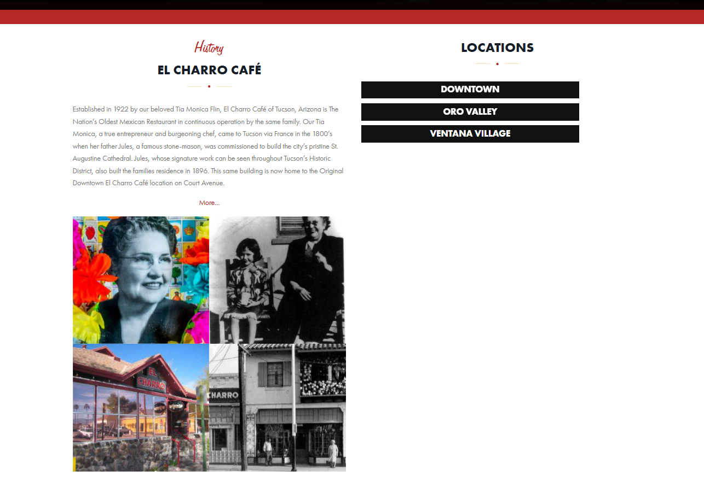
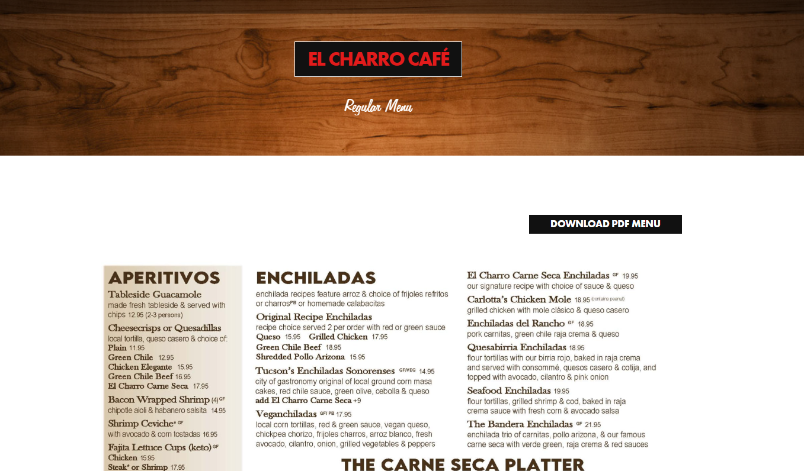
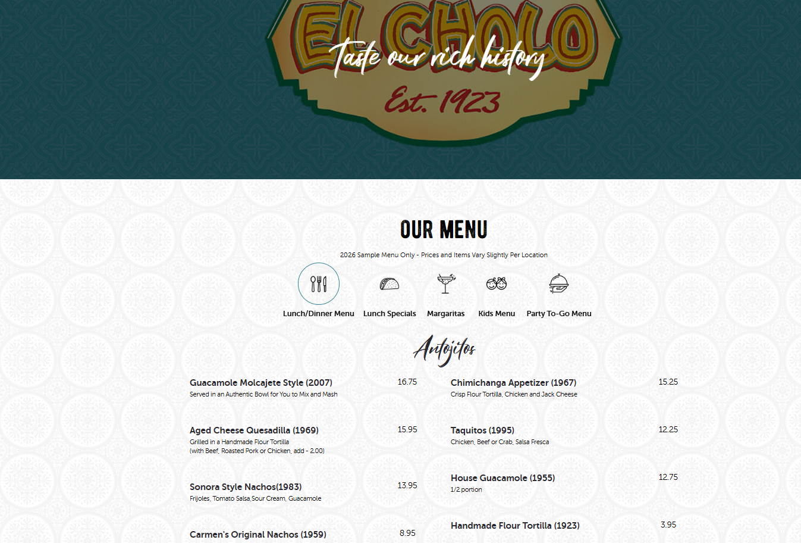
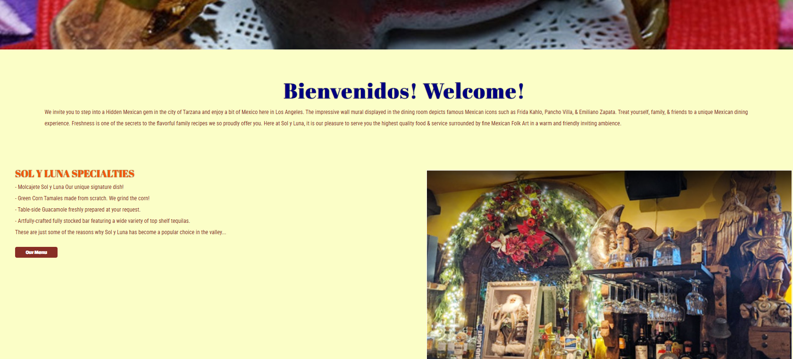
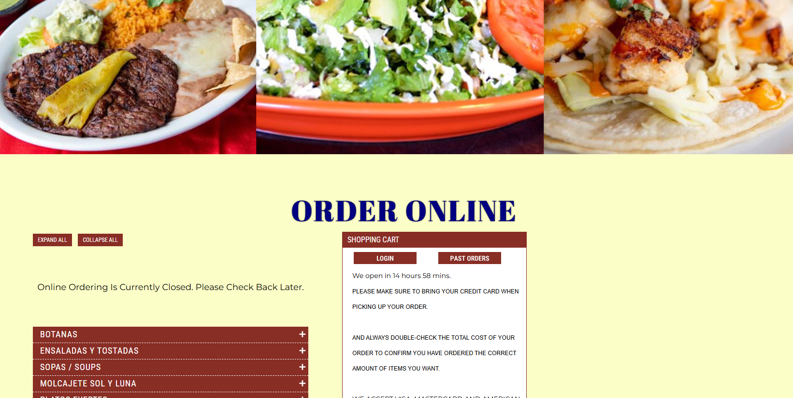

Julio's Mexican Cuisine
Julio's Mexican Cuisine is a small, family-owned business started by Julio Castro in 2004 then passed down to his son James in 2023. They are located in the heart of the San Fernando Valley in Los Angeles, California, and specialize in authentic, delicous Mexican cuisine.
The target audience for this site is for people who are looking for authentic Mexican cuisine, not the run of the mill imitation cuisine by restaurants such as Taco Bell, Del Taco, and El Pollo Loco. As the castro family moved from Mexico in 1998, there is no doubt of the authenticity of their homestyle recipes and delicous flavors.
The primary goals of Julio's Mexican Cuisine is to feed people with delicious, homemade food that satisfies that taste palates of everyone looking forward to having a traditional style Mexican dinner. The restuarant's decoration and theming hopes to immerse the customer into the expereince of eating directly in Mexico, and it hopes to leave its customers raving about the amazing flavor palates and combinations the restuarant has to offer.





Julio's Mexican Cuisine is a small, family-owned business started by Julio Castro in 2004 then passed down to his son James in 2023. They are located in the heart of the San Fernando Valley in Los Angeles, California, and specialize in authentic, delicous Mexican cuisine.
[Image of our Restaurant.]
Our restaurant was made with the promise that we will serve only the most delicious food, prepared with the utmost care to give our customers the love and appreciation they deserve. Starting from a small "mom and pop" store, we have moved multiple locations through out the years to accomadate our amazing customers.
[Image of the restaurant owners.]
4827 Ventura Boulevard
Sherman Oaks, CA 91423
[Another image of our restaurant, this time from a larger angle.]
[Our Delicious Shrimp Fajitas Image]